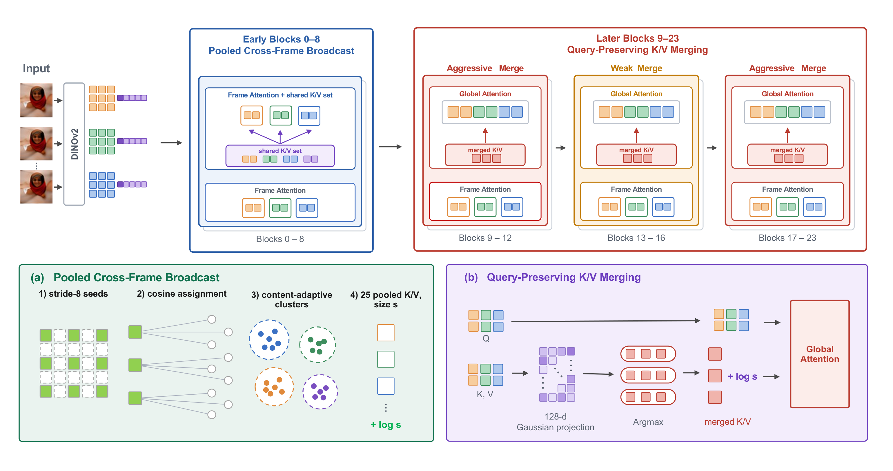

Every query attends to the merged key set and keeps its own output. Each merged key represents s_j tokens, so its logit gets +\log s_j. The result is exact when the keys in a group coincide.
TL;DR Training-free acceleration of VGGT that runs at speeds comparable to prior accelerators (2.58× at 200 frames) while keeping over 99% of VGGT's camera-pose accuracy under the strict AUC@3 metric.
Abstract
Feed-forward geometry models such as VGGT recover camera parameters, depth maps, and point maps from one to hundreds of views in a single forward pass, making them powerful backbones for multi-view 3D perception. However, VGGT's global attention is quadratic in the number of frames and dominates end-to-end runtime on long sequences, which has motivated a range of training-free efficiency methods such as token merging. These methods, however, come with a drop in accuracy that makes them hard to use in place of VGGT. We propose GPA-VGGT, a training-free acceleration method that replaces global attention in early blocks with frame attention augmented by a shared cross-frame K/V set. In the remaining blocks, we merge only keys and values while preserving all queries, restore the attention mass of the tokens each merged key represents, and randomly project the matching metric to 128 dimensions to reduce matching cost. Across diverse multi-view geometry tasks, GPA-VGGT provides training-free acceleration at speedups comparable to prior work while preserving the information required for precise geometric estimation, retaining over 99% of VGGT's pose accuracy under AUC@3.
Method

Each query sees its own frame's patches, the camera and register tokens of all frames, and content-adaptive pooled summaries of all frames. The shared set is built once per block, with no masks or per-frame copies.
Middle blocks attend sharply to a few cross-view correspondences, and errors made there are amplified downstream. They are merged at ratio 0.2 instead of 0.9. The set is chosen without ground truth.
Matching scores only feed an argmax, so we compute them after a fixed 1024→128 Gaussian projection. Matching gets about 7–8× cheaper, and the groups stay similarity-based.
Reconstruction Under Predicted Poses
Pick a scene below and orbit both views together.
GPA-VGGT (ours)
Ten input frames per scene (32 for ScanNet). The CO3D, 7-Scenes, NRGBD and RE10K scenes are the examples from the paper's qualitative figures. Each cloud is lifted from the method's own depth and predicted cameras, then aligned to ground truth by the similarity that best fits its camera centres, so pose errors show up as doubled or torn geometry. AUC@3 is for this one sequence.
Results
Same released VGGT checkpoint for every method, no training, bfloat16, one RTX A6000.
| CO3D | RE10K | |||||||
|---|---|---|---|---|---|---|---|---|
| AUC@3 | @5 | @10 | @30 | AUC@3 | @5 | @10 | @30 | |
| vanilla VGGT | 57.49 | 68.88 | 80.66 | 91.71 | 44.78 | 56.67 | 70.79 | 85.76 |
| FastVGGT | 41.56 | 55.97 | 72.61 | 88.38 | 37.56 | 50.52 | 66.38 | 83.69 |
| FasterVGGT | 16.05 | 33.80 | 60.00 | 83.91 | 22.00 | 34.09 | 51.47 | 73.85 |
| AVGGT(2) | 51.87 | 64.55 | 78.02 | 90.65 | 44.68 | 56.49 | 70.66 | 85.70 |
| AVGGT(4) | 47.08 | 60.75 | 75.72 | 89.72 | 42.53 | 54.78 | 69.50 | 85.21 |
| GPA-VGGT | 56.94 | 68.54 | 80.41 | 91.57 | 44.45 | 56.33 | 70.46 | 85.54 |
Ten frames per sequence, relative pose errors over all frame pairs. Bold and underline mark the best and second best, excluding vanilla VGGT. Under AUC@30 most accelerators stay close to VGGT; under AUC@3 the gaps open. AVGGT(2)'s fixed-stride subsampling holds on RE10K's high-overlap indoor views but drops on CO3D's wider baselines.
| time (s) ↓ | 10 | 32 | 64 | 100 | 200 | 500 |
|---|---|---|---|---|---|---|
| vanilla VGGT | 0.84 | 3.84 | 12.46 | 24.01 | 86.78 | 513.78 |
| FastVGGT | 0.85 | 2.81 | 6.46 | 11.71 | 33.91 | 169.43 |
| FasterVGGT | 0.78 | 2.66 | 6.18 | 11.29 | 32.27 | OOM |
| AVGGT(2) | 0.78 | 2.76 | 6.70 | 12.66 | 37.02 | 184.03 |
| AVGGT(4) | 0.76 | 2.51 | 5.58 | 9.86 | 25.82 | 111.74 |
| GPA-VGGT | 0.78 | 2.76 | 6.49 | 11.92 | 33.65 | 158.63 |
End-to-end runtime of the whole forward pass on one A6000. At 10 frames no method exceeds 1.2× over vanilla; at 500 frames speedups range from 2.8× to 4.6× (GPA-VGGT 3.24×, AVGGT(4) 4.60×), and FasterVGGT runs out of memory.
BibTeX
@inproceedings{sung2027gpavggt,
title = {{GPA-VGGT}: Geometry-Preserving Acceleration of {VGGT}},
author = {Sung, Muyeol and Kim, Jangwon and Lim, Jongwoo},
booktitle = {Proceedings of the IEEE/CVF Winter Conference on Applications of Computer Vision (WACV)},
year = {2027}
}